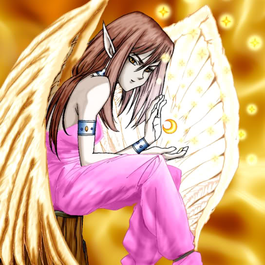

Lunar Queen Elzaim

STATS
ATK: 750
DEF: 1100DECK COST
Deck Cost per Card: 19Fusion List (40 Possible Fusions)
- Lunar Queen Elzaim + Abyss Flower = Queen of Autumn Leaves
- Lunar Queen Elzaim + Fairywitch = Dark Witch
- Lunar Queen Elzaim + Arlownay = Queen of Autumn Leaves
- Lunar Queen Elzaim + Bean Soldier = Queen of Autumn Leaves
- Lunar Queen Elzaim + Dancing Elf = Mystical Elf
- Lunar Queen Elzaim + Dark Plant = Queen of Autumn Leaves
- Lunar Queen Elzaim + Darkworld Thorns = Queen of Autumn Leaves
- Lunar Queen Elzaim + Flower Wolf = Nekogal #2
- Lunar Queen Elzaim + Fusionist = Nekogal #2
- Lunar Queen Elzaim + Gate Deeg = Garvas
- Lunar Queen Elzaim + Great Bill = Nekogal #2
- Lunar Queen Elzaim + Griggle = Queen of Autumn Leaves
- Lunar Queen Elzaim + Happy Lover = Dark Witch
- Lunar Queen Elzaim + Hourglass of Courage = Dark Witch
- Lunar Queen Elzaim + Ice Water = Dark Witch
- Lunar Queen Elzaim + Key Mace = Dark Witch
- Lunar Queen Elzaim + Little Chimera = Nekogal #2
- Lunar Queen Elzaim + Lunar Queen Elzaim = Dark Witch
- Lunar Queen Elzaim + Man Eater = Queen of Autumn Leaves
- Lunar Queen Elzaim + Meotoko = Garvas
- Lunar Queen Elzaim + Milus Radiant = Nekogal #2
- Lunar Queen Elzaim + Muka Muka = Mystical Sand
- Lunar Queen Elzaim + Muse-A = Dark Witch
- Lunar Queen Elzaim + Mushroom Man = Queen of Autumn Leaves
- Lunar Queen Elzaim + Mystical Elf = Dark Witch
- Lunar Queen Elzaim + Mystical Sheep #1 = Nekogal #2
- Lunar Queen Elzaim + Obese Marmot of Nefariousness = Nekogal #2
- Lunar Queen Elzaim + Pot the Trick = Mystical Sand
- Lunar Queen Elzaim + Princess of Tsurugi = Dark Witch
- Lunar Queen Elzaim + Queen's Double = Dark Witch
- Lunar Queen Elzaim + Rainbow Flower = Queen of Autumn Leaves
- Lunar Queen Elzaim + Ray & Temperature = Dark Witch
- Lunar Queen Elzaim + Skelengel = Dark Witch
- Lunar Queen Elzaim + Sleeping Lion = Nekogal #2
- Lunar Queen Elzaim + Stone D. = Mystical Sand
- Lunar Queen Elzaim + Tatsunootoshigo = Nekogal #2
- Lunar Queen Elzaim + The Unhappy Maiden = Dark Witch
- Lunar Queen Elzaim + The Wicked Worm Beast = Garvas
- Lunar Queen Elzaim + Waterdragon Fairy = Dark Witch
- Lunar Queen Elzaim + Wing Egg Elf = Mystical Elf